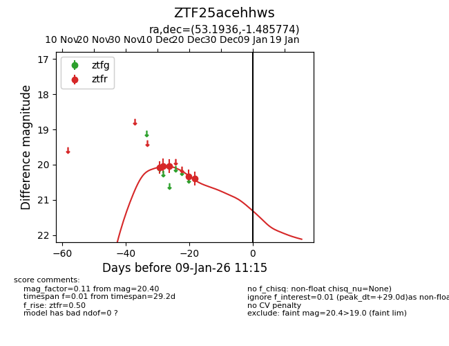
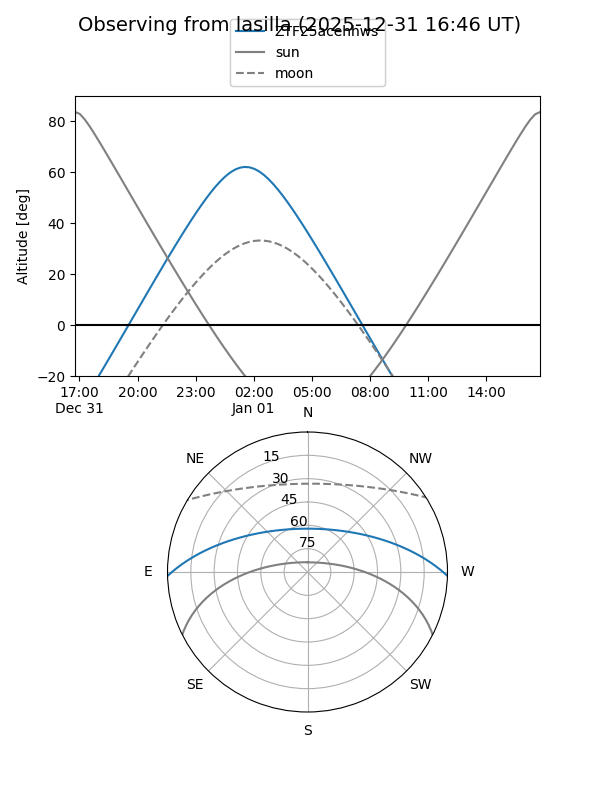
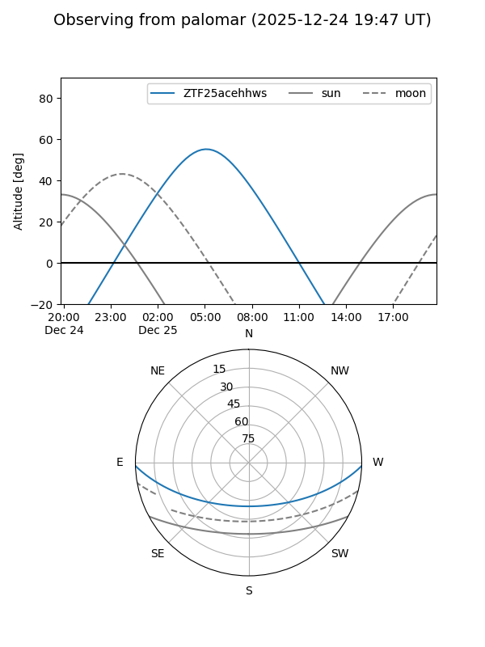
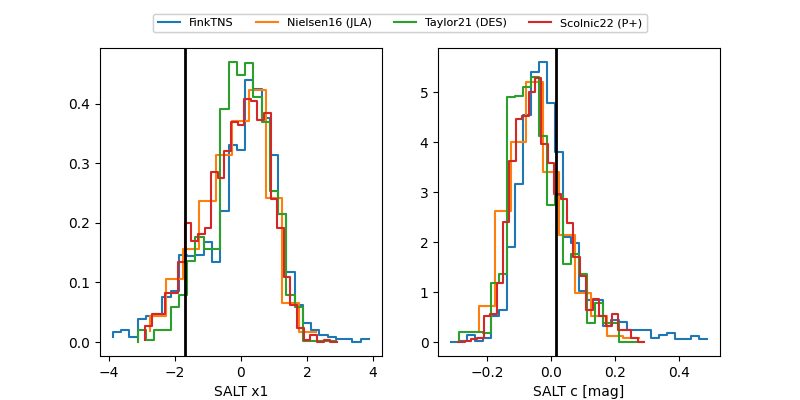

ZTF25acehhws
Target ZTF25acehhws at 2025-12-24 16:17
Aliases and brokers:
FINK: fink-portal.org/ZTF25acehhws
Lasair: lasair-ztf.lsst.ac.uk/objects/ZTF25acehhws
ALeRCE: alerce.online/object/ZTF25acehhws
alt names
ZTF25acehhws (ztf,fink_ztf)
Coordinates:
equatorial (ra, dec) = 53.1936,-1.48577
equatorial (HMS+DMS) = 03:32:46.46,-01:29:08.78
galactic (l, b) = (186.3044,-43.63153)
Flags:
Photometry:
last ztfr=20.40
5 ztfr detections
Lightcurve

Visibility


Additional plots
